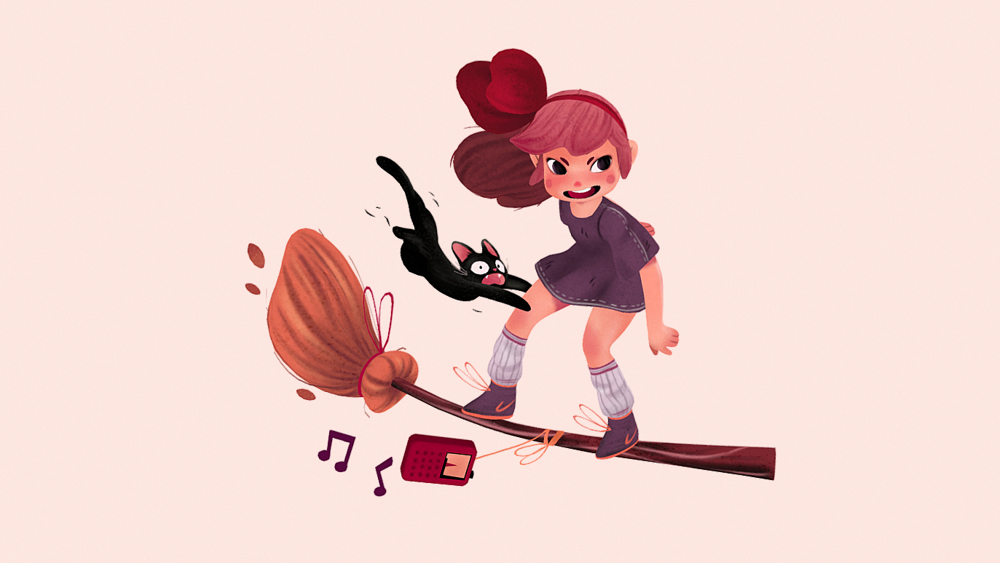
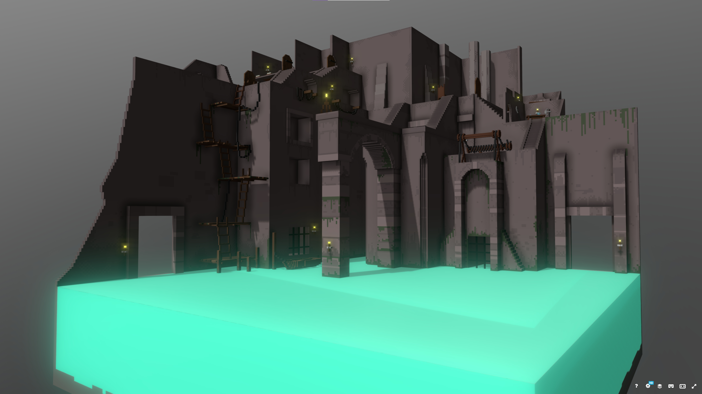

Broomstick
Inspo


Demo

Play!
Controls
- f: fullscreen
- Left Stick: pitch and yaw
- Right Trigger: fly forward
- Left Trigger: turn quickly (hold while using left stick)
- A Button: strafe (hold while pointing with left stick, disabled by default)
- 1: decrease speed multiplier
- 2: increase speed multiplier
- b: enable/disable broomstick bend
- s: enable/disable strafing